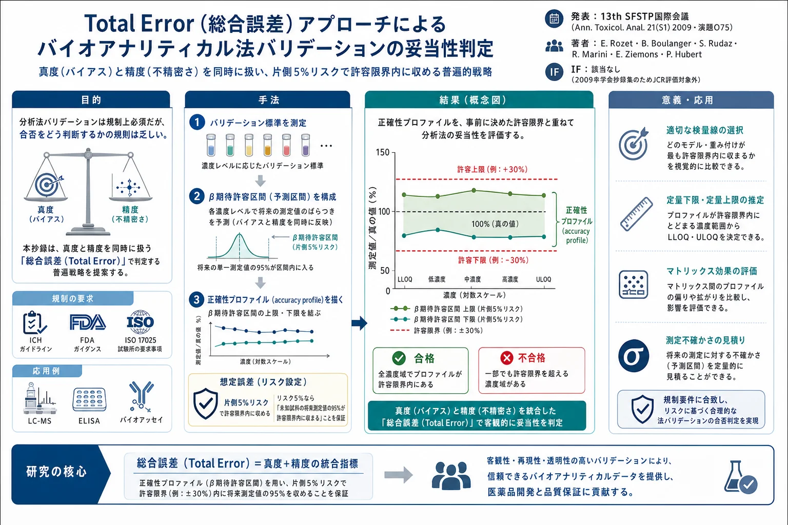

Total Error（総合誤差）アプローチによるバイオアナリティカル法バリデーションの妥当性判定——学会抄録（Rozet ら, 2009）

<!-- 方針: 原本PDFは学会抄録集(Ann. Toxicol. Anal. 2009; 21(S1), p.S1-35)の1ページ分のOCR/テキスト抽出で、演題O75(Rozetらの抄録本体)の前後に別演題(O74の末尾断片・O76・O77)が同一ページに混在する。捏造しないため、抽出できた範囲のテキストを原文の並び順のまま全訳し、切れ目(O74冒頭・O77末尾が原本ページの前後に続く)は率直に「原文参照」と明記した。図・表・参考文献リストは原本(学会抄録)に存在しないため、無理に作成していない。 -->
書誌情報
- 標題（原題）: O75. Total error for the validation of bioanalytical methods
- 著者・所属: E. Rozet¹・B. Boulanger²・S. Rudaz³・R. Marini¹・E. Ziemons¹・P. Hubert¹（¹分析化学研究室 CIRM 薬学部 リエージュ大学, ベルギー／²UCB Pharma SA, ブレーヌ・ラルー, ベルギー／³ジュネーブ大学・ローザンヌ大学 薬学部, ジュネーブ, スイス）
- 掲載: Annales de Toxicologie Analytique 21(S1), 2009, p. S1-35（学会口頭発表演題番号 O75。抄録集のため個別DOIは確認できず「要確認」）
- 種別: 学会抄録（Conference abstract）
- インパクトファクター: 該当なし——2009年時点の学会抄録集は通常JCR評価対象外。現行の後継誌「Toxicologie Analytique et Clinique」（旧 Annales de Toxicologie Analytique）は近年IF 1.0〜1.7程度と報告されているが、出典により値が異なり本抄録発表当時の評価とは無関係なため、ここでは参考として明記するに留め本文の評価には用いない
- 受理経過 / ライセンス: 原本より確認できず（学会抄録集のページ抽出のため）
補足: 本抄録は、本サイトに既掲載の2篇——「[分析法バリデーションとQuality by Design（QbD）](/papers/analytical-procedure-validation-qbd-paradigm.html)」（Hubert ら, J. Chromatogr. A 2013）と「[溶出試験に関わる分析法のバリデーション](/papers/dissolution-assay-method-validation-qbd-tolerance.html)」（Rozet ら, Anal. Chim. Acta 2012）——と同じ研究グループ（リエージュ大学 CIRM／Rozet・Boulanger・Hubert ら）が、より早い2009年の学会で発表した「総合誤差（Total Error）による分析法バリデーション判定」の方法論の要旨にあたる。上記2篇で使われている「正確性プロファイル」「β期待許容区間」という中核概念の原点を示す短い抄録として、参考情報として全訳する。
抄録本文（O75, 全訳）
補足: 原本PDFはこの抄録の直前に別演題（O74）の末尾断片が、直後に別演題（O76・O77）が同一ページ内に続けて印字されている。O74の冒頭部分は本ページ内に存在せず確認できないため「原文参照」とする。O75本体は全文を訳出した。
序論（Introduction）
いかなる分析手法も、一貫して効率よく利用するためには、事前にその信頼性を把握しておく必要がある。したがって、各試験室は自らの分析法をバリデートすることが不可欠である。バリデーションは、規制当局（ICH・FDA・GxP）や認定取得（ISO 17025）のために求められるだけでなく、分析法を日常的に使用する前の最終段階でもある。分析法バリデーションは、重大な意思決定に用いられる結果を試験室が信頼できるようにするものでなければならない。しかし、分析法が信頼できる結果を出せるかどうかについて、それを「棄却する」か「受け入れる」かを決定するためのプロセスや規則については、これまでほとんど情報が示されてこなかった。
目的（Aim）
そこで、方法の妥当性を判断するための革新的で普遍的な戦略として、総合誤差（Total Error）を用いる手法を提案する。この戦略は、不適切な分析法を受け入れてしまうリスクを制御すると同時に、将来得られる結果の信頼性を予測する能力を兼ね備えている。この検証方法論を、LC-MS・ELISA・バイオアッセイなど、さまざまな種類の分析法に適用した複数の事例を提示する。
方法（Method）
総合誤差とは、分析法の系統誤差（バイアス）と偶然誤差（不精密さ）を同時に組み合わせたものである。バリデーション用標準試料を用いて、この両方の誤差の種類を予測区間（β期待許容区間）によって統合する。最終的に、片側の上限許容限界すべてを結んだ線と、もう片側の下限許容限界すべてを結んだ線とをそれぞれ描くことで、「正確性プロファイル（accuracy profile）」を構築する。このプロファイルを、事前に規定された許容限界（例えば、バイオ分析であれば30%）と重ね合わせることで、任意の定量的な分析法の妥当性を評価できる。
結果（Results）
正確性プロファイルは、将来の測定値のうち一定の割合が許容限界内に収まる結果の領域を定める。分析者が例えば5%のリスクを許容する場合、このアプローチによって、試験室および規制当局の双方に対し、「バリデートされた方法を用いた未知試料の将来の測定値の95%（100回中95回）が、要求事項に従って評価された許容限界内に収まる」という保証を与えることができる。正確性プロファイルは、最も適切な検量線の選択、定量限界（下限・上限）の推定、潜在的なマトリックス効果の評価、さらには測定不確かさの見積りにも利用できる。
結論（Conclusions）
この検証方法論のアプローチにより、分析者および規制当局の双方が、将来得られる結果が規定の許容限界を外れるリスクを把握できるようになる。適切な検量線の選択や定量下限・定量上限の設定といったバリデーション基準は、単純明快であり、それぞれの定義に完全に合致する。この提案手法を用いることで、各分析者は自らが提供する結果の品質を予測でき、それによって、その後の重大な意思決定に対する信頼を得ることができる。
キーワード: バリデーション、総合誤差（total error）、正確性プロファイル（accuracy profile）、リスク
同一頁に併載されていた他演題（参考・要旨のみ）
補足: 以下はO75と同じPDFページに印字されていた別演題の抄録である。著者・主題がO75とは異なる（Kampo/生薬QCの主題からは外れる）ため、原文の構成に沿いつつも要旨としてまとめた。本文中に数値・結論の創作はない。
- O74（冒頭部分は原文で確認できず「原文参照」）: 抽出できた末尾部分の要旨——「15-20ルール」を満たしていてもβ期待許容区間が広くなる例（talinolol・esmolol・9-HO-risperidoneでの低・中・高濃度における区間、それぞれ38.1〜55.5%、40.9〜38.1%、13.0〜41.4%）が示され、結論として「15-20ルールを満たすバイオアナリティカル法でも、目標値から大きく外れる単発測定が日常QCで問題を起こす可能性は低くない（特に精度・バイアスが許容限界に近いとき）」とし、β期待許容区間アプローチ（日常QC限界に対応する許容区間を用いる）の方が15-20ルールより効果的にリスクの高い方法を識別できると結論している。キーワード: β期待許容区間、許容区間、バイアス、精度、バリデーション。
- O76. Kharbouche・Sporkert・Augsburger・Mangin・Staub（ローザンヌ/ジュネーブ大学法医学センター）「毛髪中エチルグルクロニド(EtG)定量のためのGC-陰イオン化学イオン化タンデム質量分析法バリデーションにおける正確性プロファイルの利用」: エチルグルクロニド(EtG)はエタノールの直接的・特異的代謝物で、毛髪中の定量はアルコール乱用の検出・モニタリングに関心が高い。超音波抽出→Oasis MAX固相抽出精製→GC-NCI-MS/MS（選択反応モニタリング, m/z 347→163および347→119）で定量。剖検毛髪（アルコール依存症既往のある被検者2名）から調製した4種のQC試料（7試験室による共同試験でEtG濃度を確定）を内部対照に使用。結果: 4種QCの平均EtG濃度は259.4・130.4・40.8・8.4 pg/mg毛髪。直線性は8.4〜259.4 pg/mg毛髪の範囲で確認（r² > 0.999）。定量下限は8.4 pg/mgに設定。併行精度・室内再現精度はいずれの濃度でも13.2%未満。結論としてEtG毛髪中日常分析に適した方法であり、実際に様々な飲酒者の毛髪試料分析に適用された。キーワード: エチルグルクロニド、毛髪、正確性プロファイル、アルコールマーカー。
- O77（末尾が原文ページで途切れており以降は「原文参照」）: Liotta・Gottardo・Bertaso・Polettini（ヴェローナ大学 法医学教室）「高質量分解能を用いた生体試料中の薬理・毒性学的関連化合物のスクリーニング——メタボロミクス的アプローチ」。導入部の要旨——生体試料中の薬理・毒性学的関連化合物(PTRC)のスクリーニングは質量分析技術の恩恵を大きく受けてきた。ライブラリ検索アプローチは未知スペクトルと参照スペクトルの比較に基づく同定法の発展を可能にしたが、参照質量スペクトルの数が限られる（LC-MSの院内/市販データベースは通常千化合物程度まで）という弱点がある。高質量分解能(HRMS)は質量と同位体パターンの高精度測定により分子式(MF)の同定を可能にするが、未知化合物をMFから同定するには、(a) MFと化合物名を関連付けるデータベース、(b) 同一MFを持つ化合物同士を識別する手段、という追加のツールが必要となる、という導入までを原文は含む（以降の方法・結果・結論部分は本ページ内に無く「原文参照」）。
訳者補足
本抄録（O75）は、Rozet・Boulanger・Hubertらのグループが後年発表した2篇の原著論文——「分析法バリデーションとQbD」（2013年, J. Chromatogr. A）および「溶出試験に関わる分析法のバリデーション」（2012年, Anal. Chim. Acta）——の中核概念である「正確性プロファイル（accuracy profile）」「β期待許容区間」を、より早い2009年の学会発表として簡潔にまとめたものである。実務上のポイントは、ICH Q2などの規制ガイドラインが「バリデーションで何を測るか（真度・精度など）」は定めていても「測った結果からどう合否を判定するか」までは定めていない、という空白を、総合誤差（バイアスと不精密さを同時に扱う予測区間）で埋める、という発想にある。分析法バリデーションの実務担当者にとっては、後続の2篇（QbD論文・溶出試験論文）を読む前の導入として位置づけると理解しやすい。
なお、原本PDFが学会抄録集の1ページ抜粋であるため、図・表・引用文献リストは存在せず、本ページでも作成していない。